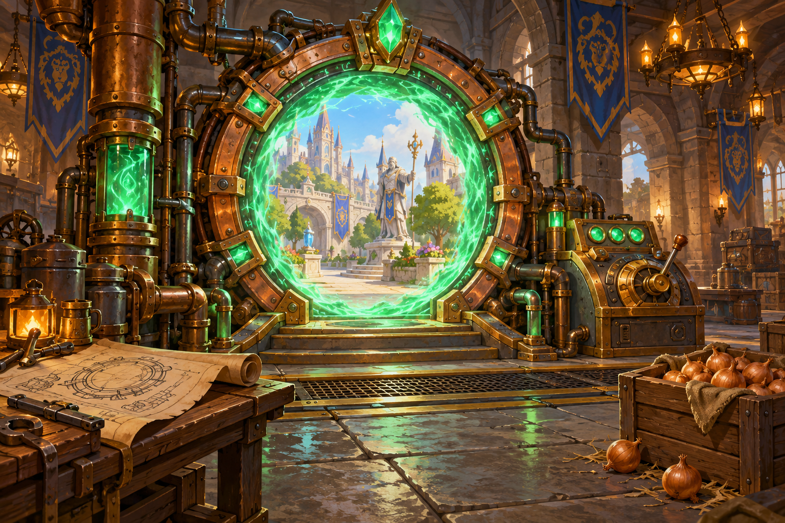
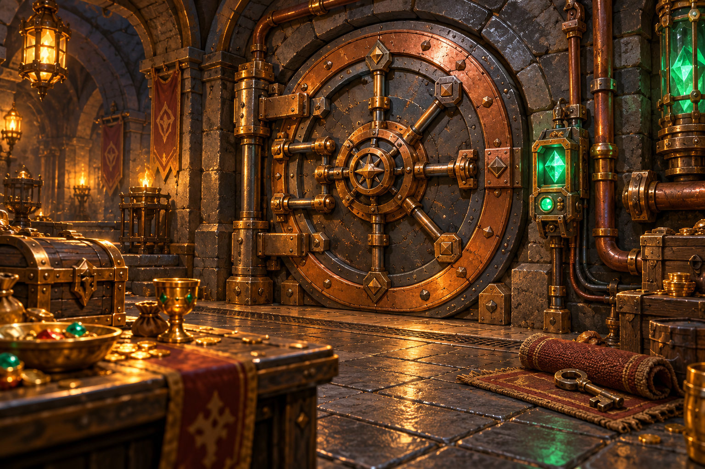
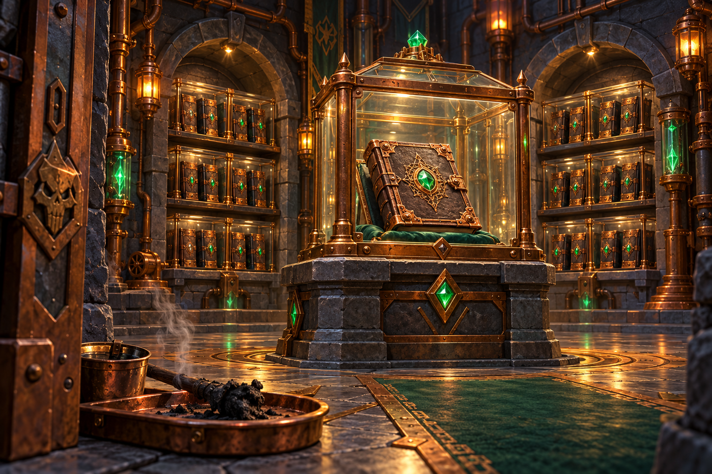
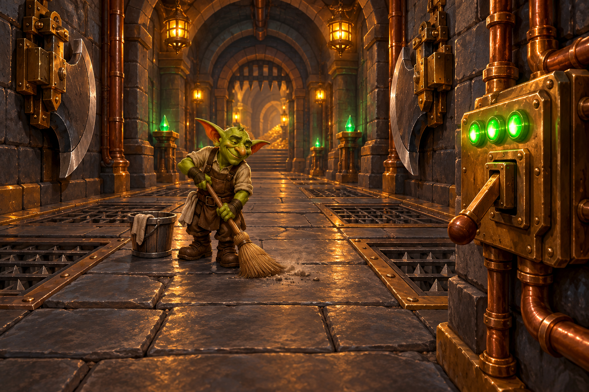

Cuatro encargos resueltos. Los informes de daños
anteriores a mi llegada se facturan por separado.

Un portal, un destino
La red de portales de una hermandad enviaba a los
viajeros a destinos equivocados. El almacén recibió
tres aventureros y el campo de batalla, una entrega
de cebollas.
Separé las rutas arcanas, señalicé los destinos
y añadí un portal de emergencia.
Resultado: cada viajero llega a su
destino. Las cebollas también.

El botín no se toca
Una cámara del tesoro sufría robos constantes.
La llave estaba bajo el felpudo y todos los
visitantes tenían permiso de acceso.
Instalé un control de acceso con permisos
individuales y un registro de entradas.
Resultado: tesoro protegido.
El propietario también necesita identificarse,
aunque siga presentando reclamaciones.

Grimorio a prueba de magos
Un archivo perdió su único grimorio durante una
demostración de seguridad contra incendios.
El responsable pidió que no constara ese detalle.
Preparé copias de seguridad en ubicaciones separadas
y comprobé que podían recuperarse.
Resultado: conocimiento recuperable.
Las demostraciones con fuego se realizan fuera.

Trampas en mantenimiento
Las trampas de una mazmorra se activaban durante
la limpieza. Encontrar personal dispuesto a
trabajar allí era cada vez más complicado.
Incorporé indicadores de estado y un modo de
mantenimiento para desactivar las trampas
durante las tareas autorizadas.
Resultado: el personal termina
su turno y las escobas duran más de una semana.